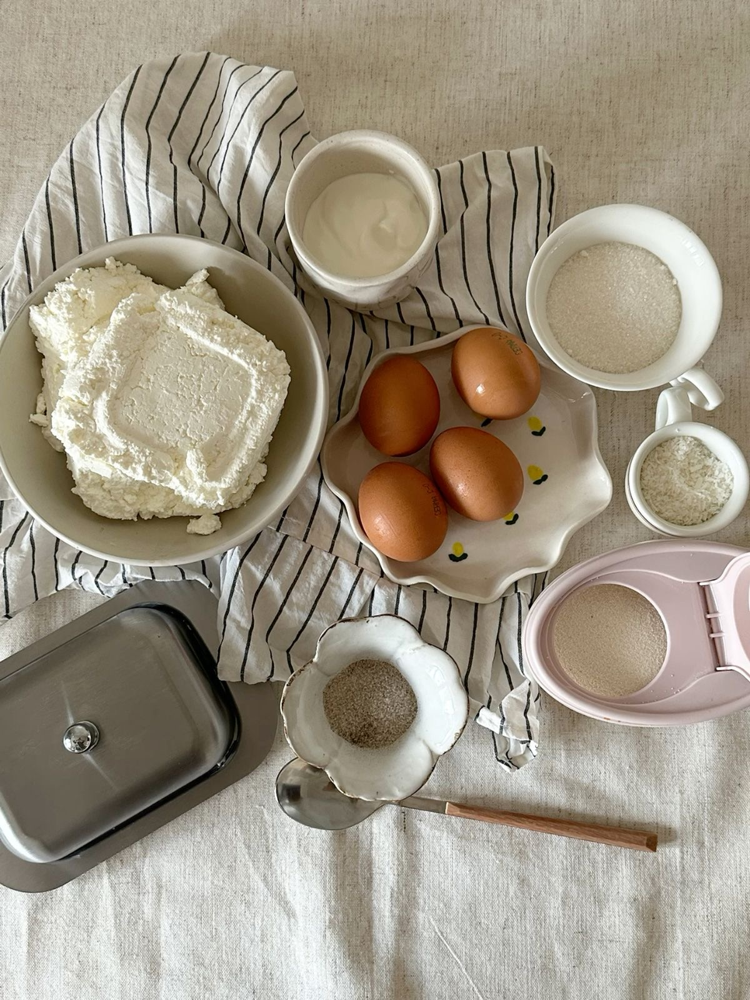

SYRNYKY
"Soft inside, crispy outside — like every good story."

Ingredients
- 400g cottage cheese (best if dry)
- 1 egg
- 2–3 tbsp sugar
- 1 tsp vanilla extract (optional)
- Pinch of salt
- 3–4 tbsp flour (plus more for coating)
Recipe
- Mash the cottage cheese with a fork or blend for smoother texture.
- Add egg, sugar, salt, and vanilla — mix well.
- Add flour gradually to form soft dough — not too sticky.
- Form small patties, lightly coat with flour.
- Fry in oil or butter on medium heat for 2–3 minutes per side until golden.
- Serve warm with sour cream, jam, or honey.
That was the last one — time to cook!